Water filtration products
Browse household water systems and appliances. Use filters or add up to three models to comparison.
36 Modelle
36 Produkte in der Datenbank

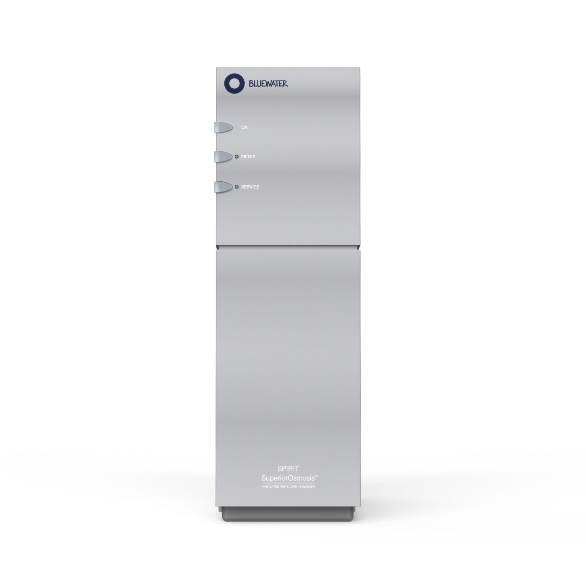
Bluewater
Spirit 300CP
1.910 €
Technologie: SuperiorOsmosis™ (Umkehrosmose)Reinigungsleistung: bis 99–99,7 % laut HändlerseiteTagesleistung: 2.521–3.380 l/Tag in der Tabelle; bis 3.800 l/Tag im Beschreibungstext


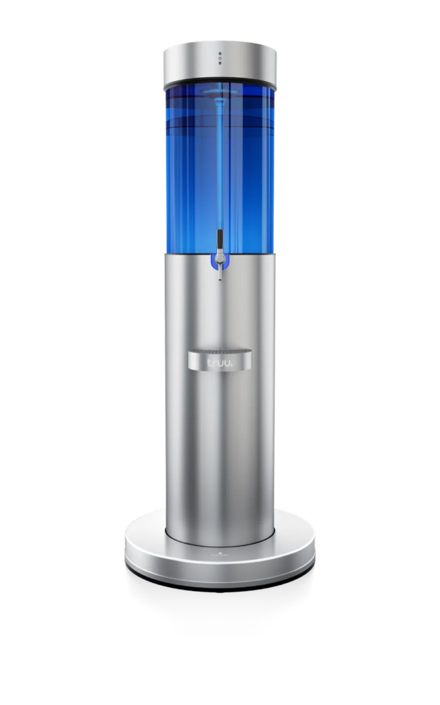
truu
fountain 3
Preis auf Anfrage
Einsatz: Unternehmen, Fitness, Gastronomie, Kliniken und PflegeInstallation: FestwasseranschlussReservoir: 85 Liter, Glas

MisterWater
Wasserfilteranlagen (Puria / Arctica / Silver Star / Futura)
Preis auf Anfrage
Hinweis: Die Quelle führt vier Modelle, kein offizielles Modell „Premium RO System“Modelle: Puria, Arctica, Silver Star und FuturaPuria: Auftisch; 8 Stufen; ca. 0,7 L/min; 25,3 × 36,4 × 40,4 cm; 7,5 kg
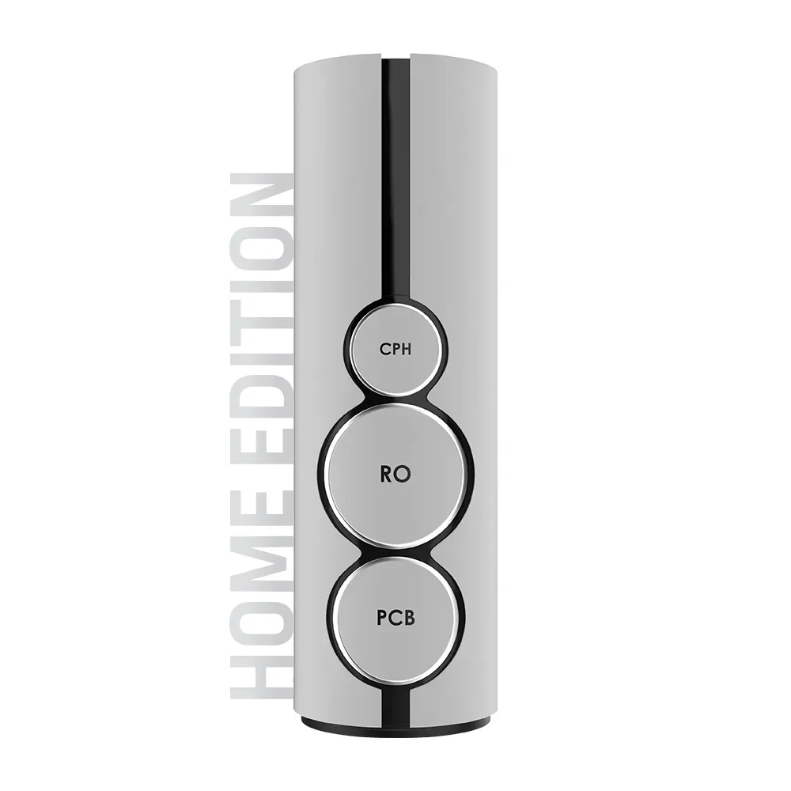
WERTACH
Pantera
Preis auf Anfrage
Produkttyp: Untertisch-GourmetwasseranlageTechnologie: Direct-Flow-UmkehrosmoseVarianten: Basic, Performance und Medical

OsmoFresh
Fusion Pro
1.290 €
Preis: 1.290 € (Herstellerseite bei Recherche)Produktnummer: ROFPEinsatz: Haushalt, 1–6 Personen

Greifenstein Wasserveredelung
INOX
Preis auf Anfrage
Bauart: Untertisch-Umkehrosmoseanlage mit VorratstankFilterwasser: 100–360 Liter pro TagWirkungsgrad: 50 % Abwasser laut Hersteller

Gewapur
Osmo Star 2.0
Preis auf Anfrage
Offizieller Modellname: Osmo Star 2.0; „RO Comfort“ ist auf der verlinkten Seite nicht aufgeführtTechnologie: Direct-Flow-UmkehrosmoseMembran: 800 GPD

Aqmos
AQ-RO 800 GPD
Preis auf Anfrage
Modellstatus: „AQ-RO 800 GPD“ ist auf der verlinkten aktuellen Kategorieseite nicht eindeutig ausgewiesenTechnologie: UmkehrosmoseNennleistung aus Modellbezeichnung: 800 GPD

Wasserhaus
ZEN FLOW
Preis auf Anfrage
Preis: 1.199 € (Herstellerseite bei Recherche)Bauart: Tankloses Direct-Flow-UnterbaugerätMembran: 800 GPD

Arktisquelle
Direct Flow Premium
Preis auf Anfrage
Modellstatus: „Direct Flow Premium“ ist in der verlinkten aktuellen Collection nicht eindeutig ausgewiesenTechnologie: Umkehrosmose laut ursprünglicher ModellangabeProduktgruppe: Arktisquelle Wasserfiltersysteme
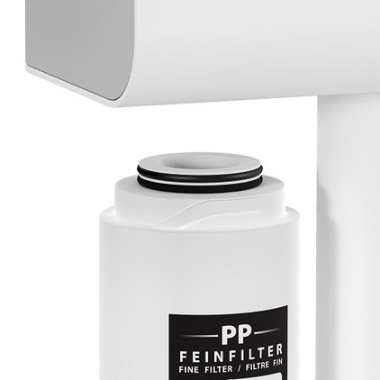
myAqua
myAQUA 1900
Preis auf Anfrage
Einsatz: Süß- und MeerwasseraquaristikTagesleistung: bis 1.900 LiterDurchfluss: max. 1,32 L/min

Purway
PUR Booster Quick
309 €
Preis: 309 € (Herstellerseite bei Recherche)EAN: 4260303252520Filterstufen: 7
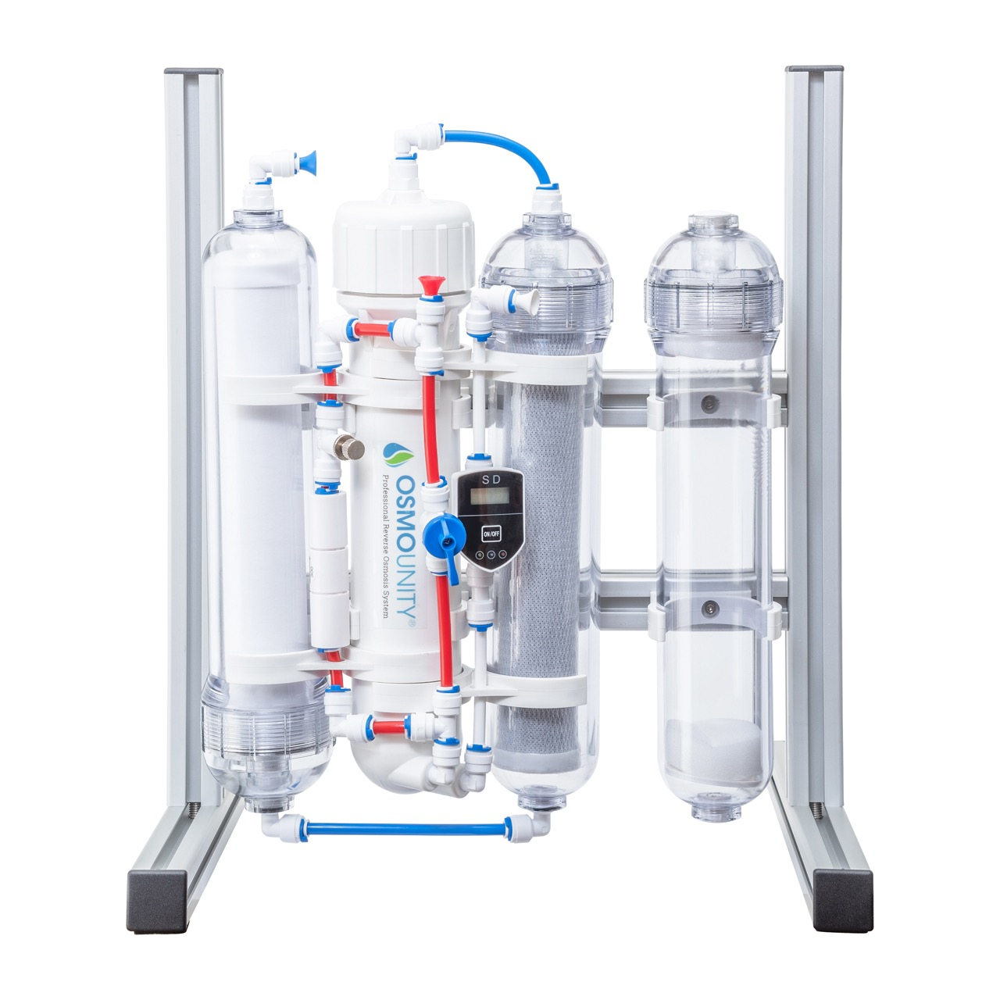
Osmounity
Direct Flow
Preis auf Anfrage
Produktgruppe: Aquaristik-FilteranlagenTechnologie: UmkehrosmoseBauart: Direct Flow

WasserWelt
WW Premium Direct Flow
Preis auf Anfrage
Modellstatus: Keine öffentlich verifizierbare offizielle Produktseite hinterlegtTechnologie: Umkehrosmose gemäß vorhandener ModellangabeBauart: Direct Flow gemäß vorhandener Modellangabe
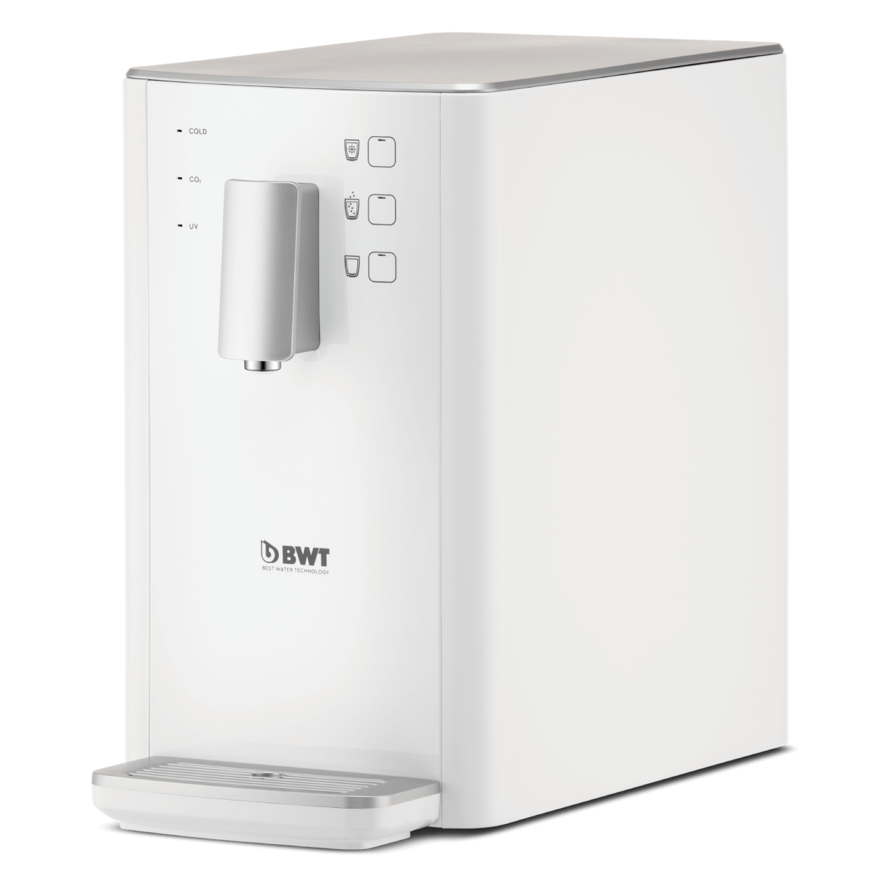
BWT
AQA drink PRO 20
Preis auf Anfrage
Produktname: AQA drink Pro 20 CASProduktnummer: 826024Produkttyp: Leitungsgebundener Wasserspender
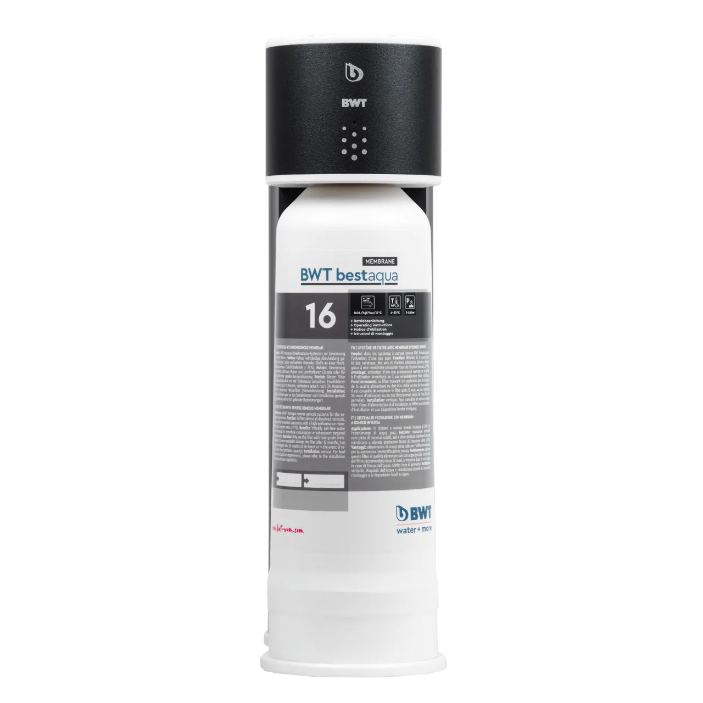
BWT
bestaqua ROC
Preis auf Anfrage
Technologie: UmkehrosmoseEinsatz: Gastronomie und HotellerieBauart: Kompaktes professionelles System
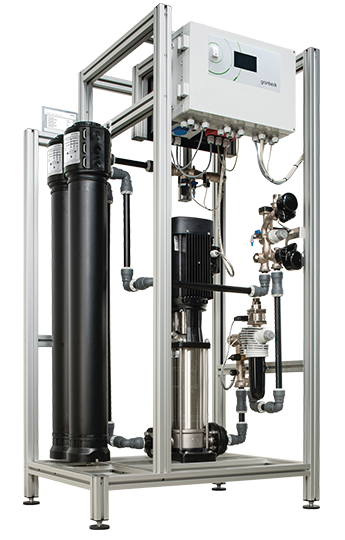
Grünbeck
GENO-OSMO-X
Preis auf Anfrage
Technologie: UmkehrosmoseEinsatz: Gewerbe und IndustrieSystem: Modular konfigurierbar

JUDO
i-fill
Preis auf Anfrage
Produktstatus: Direkte offizielle Modellseite in den bereitgestellten Quellen nicht vorhandenProdukttyp: Heizungsbefüllsystem gemäß vorhandener ModellangabeEinsatz: Heizungswasseraufbereitung

Alfiltra
RO Professional
Preis auf Anfrage
Technologie: UmkehrosmoseEinsatz: Gewerbe und professionelle AnwendungenBaureihe: Projekt- und leistungsabhängig
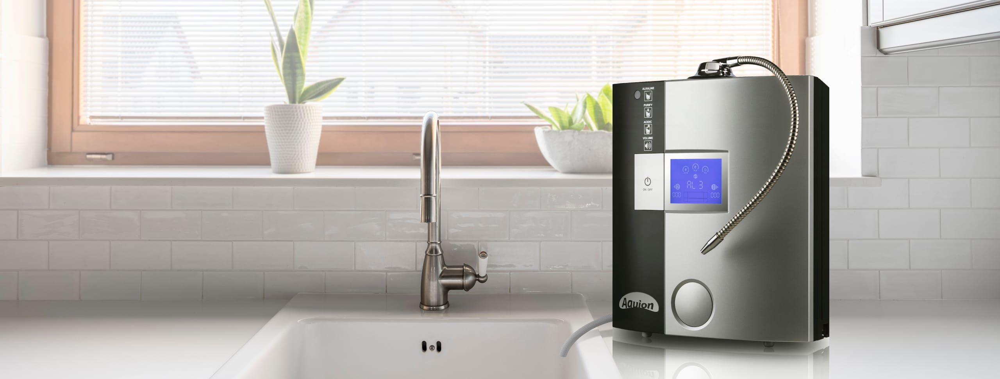
AQUION
Premium 7
Preis auf Anfrage
Produkttyp: WasserionisiererSerie: AQUION PremiumElektroden: 7

Quooker
Front + CUBE
Preis auf Anfrage
Produkttyp: Multifunktionale KüchenarmaturArmatur: Quooker Front mit Bedienung am AuslaufBasiswasser: Kalt und warm

BRITA
mypure P1
Preis auf Anfrage
Produkttyp: Untertisch-TrinkwasserfilterFilterkartusche: BRITA P1000Installation: Unter der Spüle

GROHE Blue
GROHE Blue Home
Preis auf Anfrage
Produkttyp: Küchen-WassersystemWasserarten: Still, medium und sprudelndFiltration: GROHE Blue Filter

Franke
Mythos Water Hub
Preis auf Anfrage
Varianten: All in One 6-in-1 und Sparkling 5-in-1Wasserarten: Kalt, warm, kochend, gekühlt, raumtemperiert und sprudelnd – variantenabhängigInstallation: Kompaktes Untertischsystem
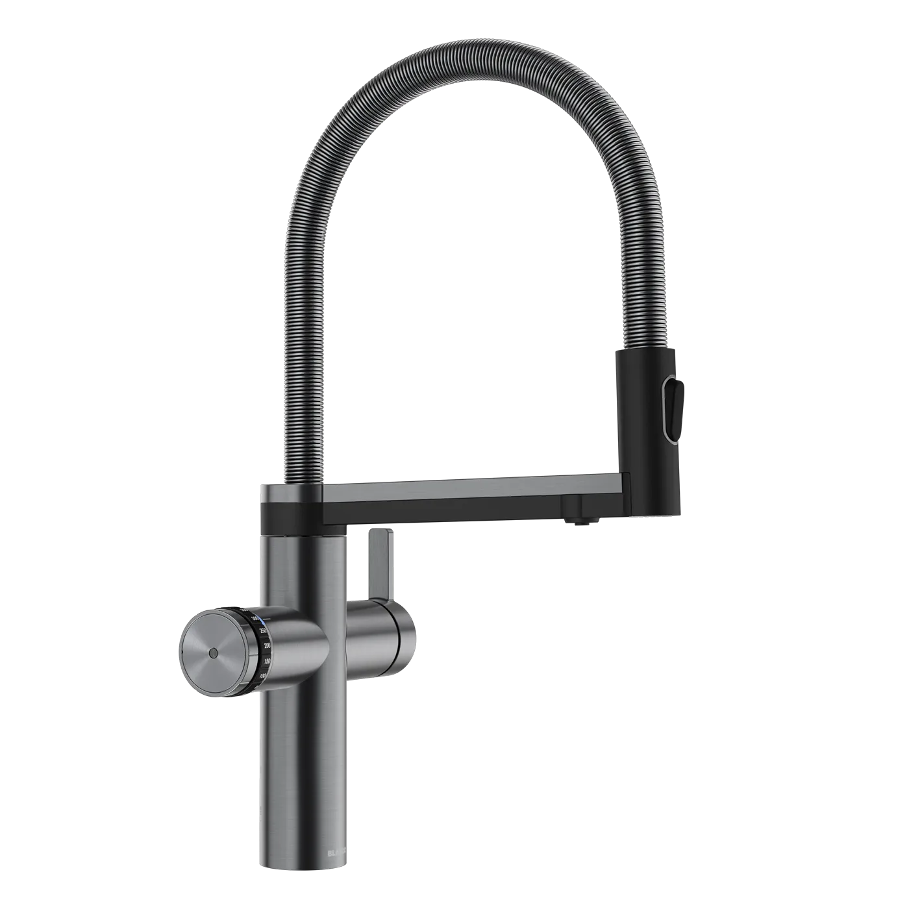
BLANCO
BLANCO UNIT / DRINK.SYSTEMS
Preis auf Anfrage
Produkttyp: Modularer Küchen-Wasserplatz, kein einzelnes GerätKomponenten: Armatur oder DRINK.SYSTEM, Spüle, Abfall- und OrganisationssystemKonfiguration: Stile, Materialien und Einbauarten kombinierbar

Aqua Global
Flexible Touch
Preis auf Anfrage
Bauart: Mobile Auftisch-Wasserbar mit UmkehrosmoseWasseranschluss: Nicht erforderlichTemperaturen: Baby ca. 50 °C; Tea ca. 85 °C; Hot ca. 95 °C; Room ungekühlt
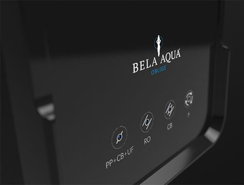
Bela Aqua
OBLIGE Directflow
Preis auf Anfrage
Bauart: Tanklose Direct-Flow-UmkehrosmoseanlageMembran: 800 GPD High Performance RODurchfluss: bis zu 2,1 L/min
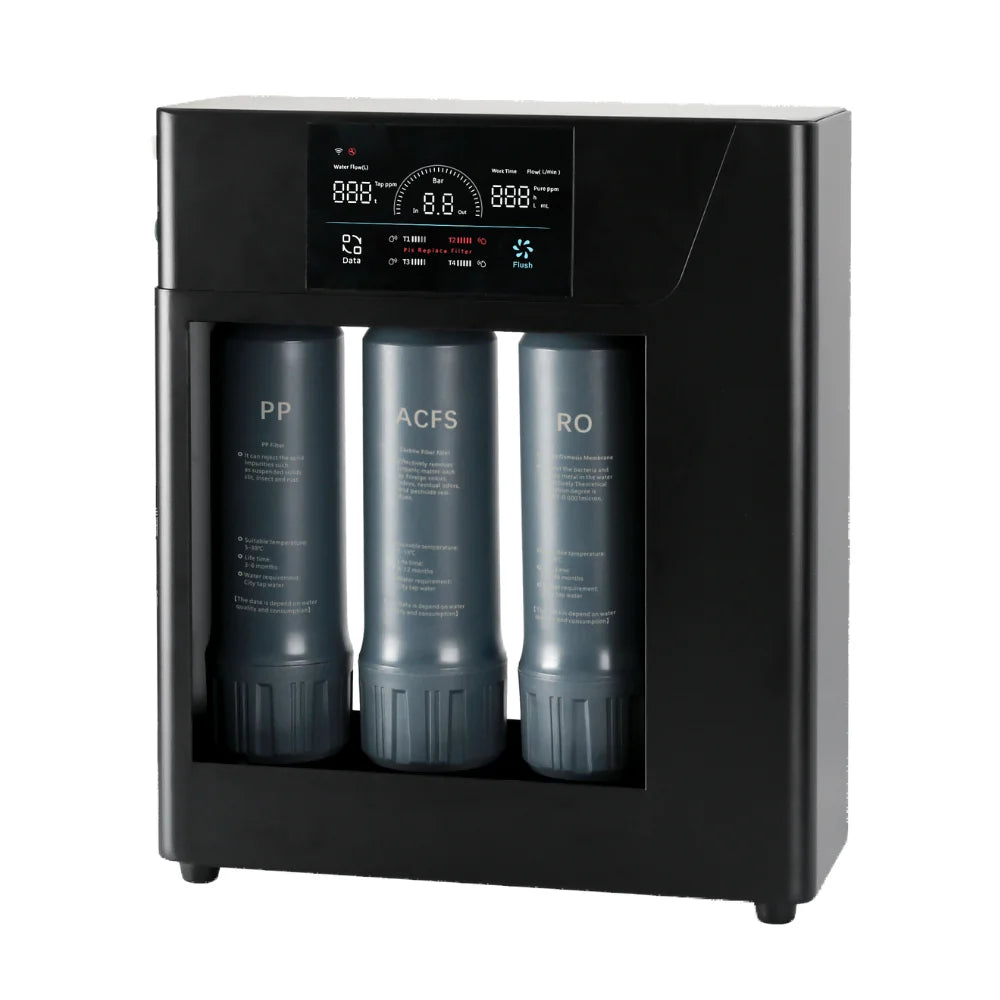
AQUAPRO
High Flow 800 GPD Reverse Osmosis System
907 €
Nennleistung: 800 GPDFiltration: ACFS und zwei RO-ElementeMembranfeinheit: 0,0001 Mikron

Culligan
C2 Firewall® RO Water Dispenser
Preis auf Anfrage
Nutzerbereich: 1–30 PersonenFiltration: Direct-Flow-UmkehrosmoseHygiene: Firewall® UVC; laut Hersteller 99,99 % Schutz vor Viren und Bakterien

BLACKWATER
Drop
1.490 €
Produkttyp: Untertisch-Direct-Flow-UmkehrosmoseFilterstufen: 5Vorfilter: PCB 2-in-1: Aktivkohleblock-Sedimentfilter + Glyphosat-Einheit
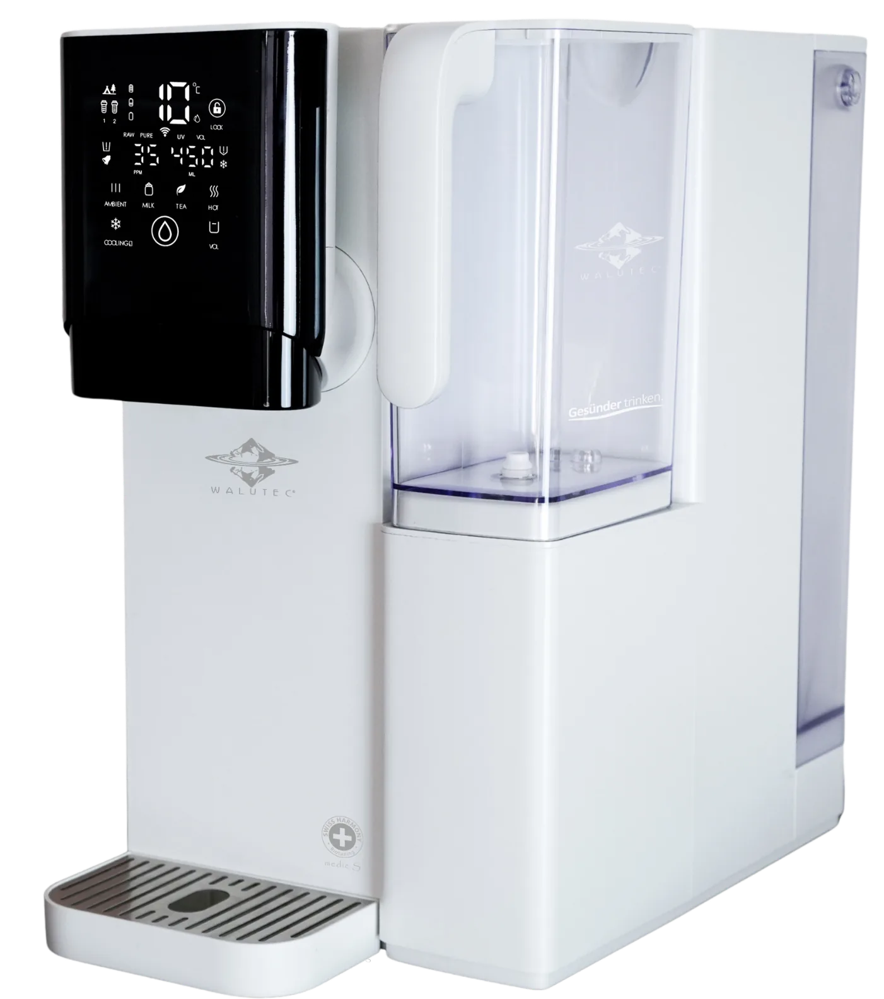
WALUTEC
eL-Neró® smart + medic S
Preis auf Anfrage
Bauart: Mobiles Auftischsystem ohne FestwasseranschlussTechnologie: 4 Phasen mit 13 Filtrations- und AufbereitungsstufenRO-Membran: FILMTEC® TFC, 100 GPD, 0,0001 µm

WALUTEC
eL-Neró® speedflow medic S
Preis auf Anfrage
Bauart: Tankloses Untertisch-Direct-Flow-SystemTechnologie: 4 Phasen, bis zu 14 Filtrations- und AufbereitungsstufenRO-Membran: 700 GPD Hochleistungsmembran